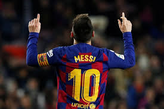
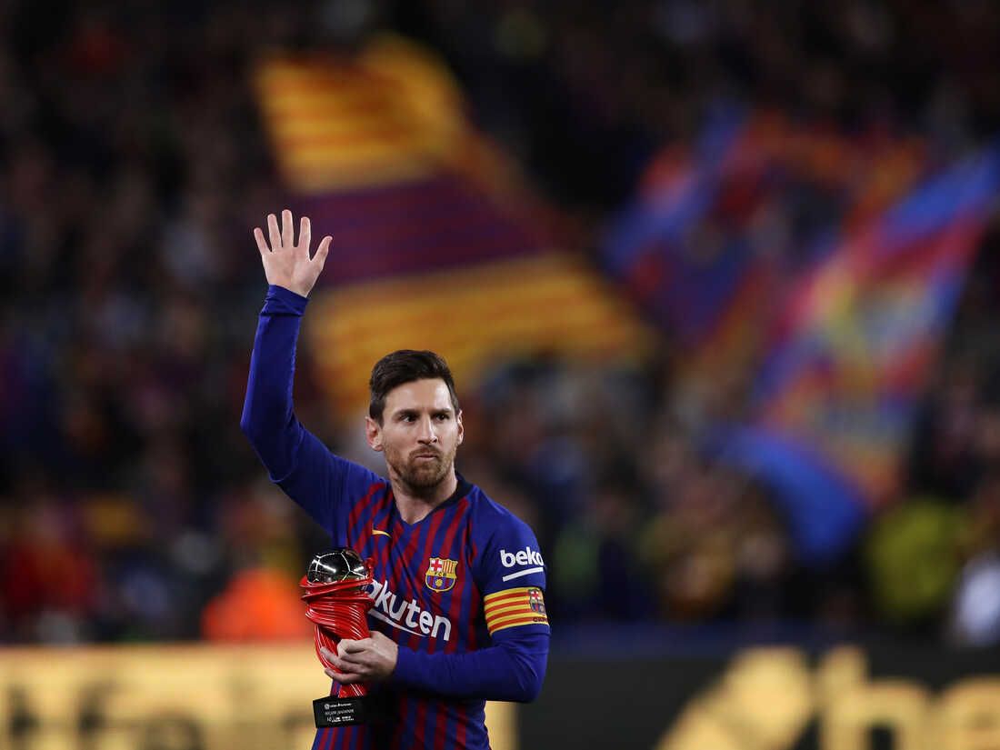

Lionel Messi
Lionel Messi, in full Lionel Andres Messi, also called Leo Messi, (born June 24, 1987,Rosario,Argentina), Argentine-born football (soccer) player who was named Fédération Internationale de Football Association (FIFA) world player of the year six times (2009–12, 2015, and 2019). While at Barcelona, Leo had 30 goals and 9 assists in 35 mathces in LaLiga. In Champions League, Leo has 5 goals in 6 matches. In total, Messi has scored 672 goals for Barcelona.
In the year 2021, Messi left his life club, FC Barcelona, for PSG, a french club that plays in Ligue 1, because Barcelona was going into debt and could no longer pay afford to make a new ocntract. Anothe reason for Messi, leaving Barcelona was because Barcelona couldn't pay his wage bill. Now Messi is at PSG (Paris-Saint German). Messi has had a slow start at his new club, PSG. Messi had played 18 mathces and has 2 goals and 10 assits. But in Champions League, Messi has 5 goals in 7 matches.
